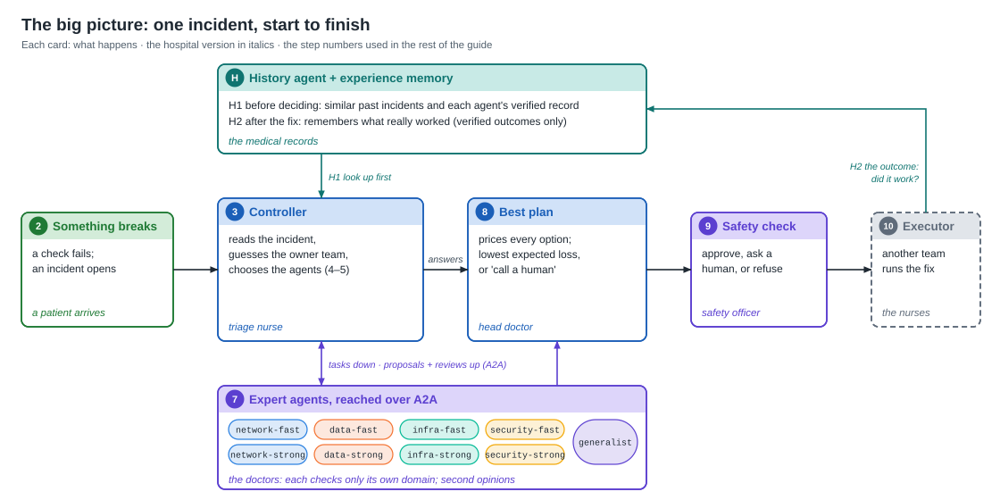
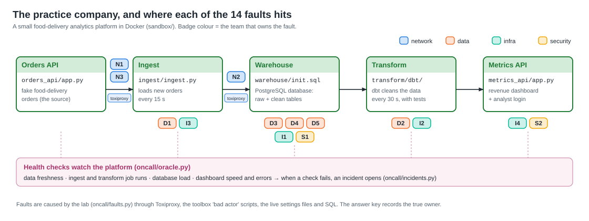
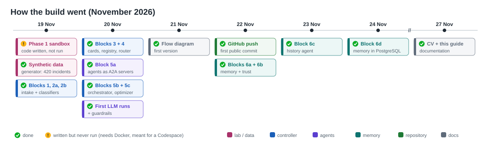
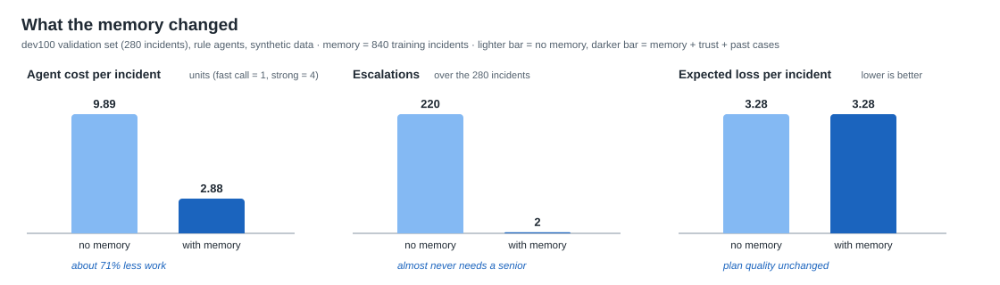
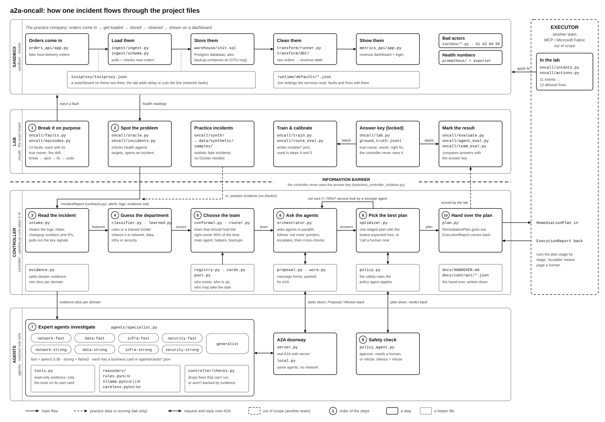
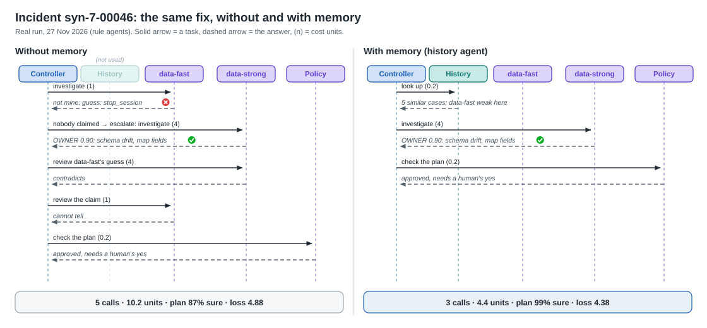
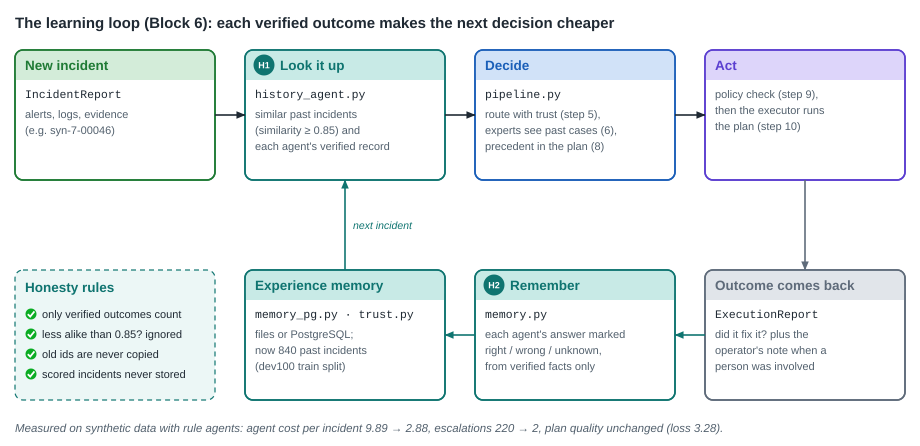
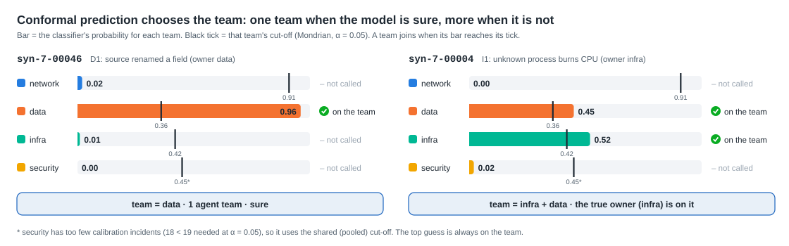
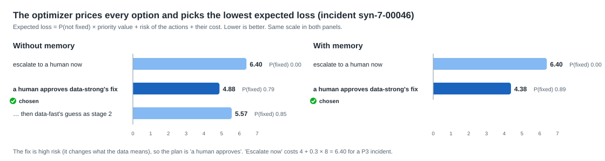

A plain-language guide to come back to later: what the project is, how one incident flows through it, what every file does, what has been measured, and what is still open.
Colours used in every figure: sandboxlabcontrolleragentsmemoryexecutor · teams: networkdatainfrasecurity
When something breaks on a small data platform, a controller decides which AI expert agents to ask, collects their diagnoses over the A2A protocol, merges them into the safest repair plan, gets the plan checked by a policy agent, hands it to another team to carry out, and learns from the verified outcome.

The whole project maps onto an emergency department. Keep this table in mind; the rest of the guide uses it.
| In a hospital | In the project | Step | Main file |
|---|---|---|---|
| A patient arrives | An incident (alerts + logs + evidence) | 2 | oncall/incidents.py |
| The receptionist reads the notes | Intake: clean the logs, pick out the signals | 3 | controller/intake.py |
| The triage nurse guesses the department | Classifier: chance it is network / data / infra / security | 4 | controller/learned.py |
| Deciding how many doctors to call | Router with conformal prediction | 5 | controller/router.py |
| Checking the medical records first | History agent: similar past incidents, each agent's track record | H1 | agents/history_agent.py |
| Doctors examine the patient | Expert agents investigate their own domain | 6–7 | agents/specialist.py |
| Second opinions | Cross-check: agents review each other's claims | 6 | controller/orchestrator.py |
| The head doctor picks the treatment plan | Optimizer: the plan with the lowest expected damage | 8 | controller/optimizer.py |
| The safety officer signs it off | Policy agent: approve, ask a human, or refuse | 9 | agents/policy_agent.py |
| Another team gives the treatment | The executor (MCP / Microsoft Fabric team): out of scope | 10 | controller/plan.py |
| The outcome is written in the records | Remember the verified outcome | H2 | controller/memory.py |
The platform being looked after is a small, pretend food-delivery analytics company, built as a Docker sandbox that a lab can break on purpose:

It is framed as a miniature Microsoft Fabric-style data platform; docs/HANDOVER.md maps each part
onto Fabric items. Four teams (domains) can own a problem: network, data, infra and security.
The owner is the team whose fix removes the cause, not the team where the symptom shows up. Several faults share a symptom on purpose (for example, "ingest timed out" can be N1, D3 or I1), which is what makes choosing the right team hard.
| Id | Owner | What breaks |
|---|---|---|
| N1 | network | Heavy latency on the primary network path to the orders API |
| N2 | network | Connections on the primary path to the warehouse are reset |
| N3 | network | Orders API hostname on the primary path no longer resolves |
| D1 | data | Source renamed amount to total_amount (our worked example, Chapter 3) |
| D2 | data | Source sends a batch with null amounts and re-sent orders |
| D3 | data | Ad-hoc maintenance session holds an exclusive lock on raw.orders |
| D4 | data | Reporting worker leaks connections until the warehouse runs out |
| D5 | data | Analyst notebook runs CPU-heavy queries against the warehouse |
| I1 | infra | Unknown process burns the warehouse container's CPU |
| I2 | infra | Transform container's memory limit is too small for dbt |
| I3 | infra | Ingest worker's spool disk is full |
| I4 | infra | Bad config deploy crash-loops the dashboard API |
| S1 | security | Unapproved client bulk-exports raw orders with the ETL credential |
| S2 | security | Password-guessing client hammers the dashboard login |
The parts on their own (agents, routing, learning from feedback) are known ideas. The new value comes from putting them together in a setting where outcomes can be checked, and from evaluating them honestly. The three contributions:
| Id | Contribution | In plain words |
|---|---|---|
| C1 | Cost-aware conformal delegation | Decide how many agents to involve, with a guarantee that the right owner is among them. |
| C2 | Open-pool routing from Agent Cards | Agents can join, slow down or fail without retraining anything. |
| C3 | Learning from verified outcomes only | Trust agents by what was proven to work, and stay robust when some feedback is wrong. |
The controller was built block by block, one block per step, each explained before the next began.

| Block | What it does | Main files | Status |
|---|---|---|---|
| Phase 1 | Docker sandbox + fault lab (inject, detect, fix, undo) | sandbox/, oncall/ | Code written, never run |
| Data | Synthetic incident generator | oncall/synth/ | Done |
| 1 | Intake: incident → features | intake.py | Done |
| 2a / 2b | Rules classifier (baseline) / learned classifier | classifier.py, learned.py | Done |
| 3 | Agent Cards + registry (who exists, who is up) | cards.py, pool.py, registry.py | Done |
| 4 | Conformal router (C1) | conformal.py, router.py | Done |
| 5a | Expert agents (rules + Ollama LLM) as real A2A servers | agents/, wire.py | Done |
| 5b | Orchestrator: pointers, escalation, cross-check | orchestrator.py | Done |
| 5c | Optimizer + policy agent + "a human approves" plans | optimizer.py, policy.py | Done |
| 6a | Experience memory (verified outcomes, similarity search) | memory.py | Done |
| 6b | Trust agents by their verified record (C3) | trust.py, reliability.py | Done |
| 6c | History agent over A2A; past cases for experts; precedent in the plan | history.py, history_agent.py | Done |
| 6d | The memory stored in PostgreSQL | memory_pg.py, memory_schema.sql | Done |
| What was measured | Result | What it means | Date |
|---|---|---|---|
| Classifier, top-1 accuracy (seed 7 val, 84 incidents) | learned 91.7% vs rules 88.1% | Picks the owner team first 9 times in 10. Small sample: a bigger set is needed before claiming a difference. | 19 Nov |
| Conformal team choice (dev100 val, Mondrian, α = 0.05) | 100% owner coverage at 1.12 teams per incident | The right team was always called, usually alone. Fixed thresholds also hit 100% (1.14 teams), so the gain is the guarantee, not savings. | 20 Nov |
| One over-claiming ("careless") agent in the pool | optimizer loss 4.37 vs 5.74 for "trust the first claim" | The optimizer resists a loud, wrong agent. | 20 Nov |
| First LLM run (llama3, 10 incidents) | loss 5.62 vs top-claim 6.17, human 8.35, perfect 5.17 | Still helps, but the LLM agents were weak: no claim on 40% of incidents, and their reviews were close to random. | 20 Nov |
| Memory + trust (dev100 val, memory = 840 train incidents) | agent cost 9.89 → 2.88 per incident; escalations 220 → 2; loss unchanged (3.28) | Remembering who was right cuts the agent work by about 71% with no loss in plan quality. | 23–24 Nov |
| "Shy" agents (find the fix, then say "not mine") | loss 4.85 → 3.39 with trust | The track record rescues agents that under-claim, as the small LLMs did. | 22 Nov |
| Wrong operator feedback | 20% wrong: quality holds (cost rises); 40% wrong: breaks | The C3 robustness target (20%) is met. | 22 Nov |
| Four fault types left out of the memory | few cases shown (0.28 per incident), no wrong actions | An unseen kind of incident does not trick the memory into a wrong fix. | 23 Nov |
| PostgreSQL vs files | identical (loss 3.2902, cost 2.8786) | The database version changes storage only, not decisions. | 24 Nov |
| Worked example syn-7-00046 (Chapter 3) | 5 calls / 10.2 units → 3 calls / 4.4 units; confidence 0.87 → 0.99 | The same incident with and without memory, run on 27 Nov. | 27 Nov |
| Automated tests | 281 collected | 8 are skipped by design (7 need a throwaway test database). | 27 Nov |
Loss = a score for expected damage (lower is better): the cost of a wrong or late fix, scaled by priority, plus the risk of each action plus the agents' cost. Cost units: one fast-agent call = 1, strong = 4, generalist = 6, policy and history agents = 0.2 each. Both are explained in Chapter 5.

python -m oncall validate on all 14 faults) is still open, and final results must come from it.oncall/cli.py, oncall/memory_eval.py,
oncall/team_eval.py.eval-team with the real LLM agents (fast = qwen2.5:3b, strong = llama3), with and without memory.oncall validate on all 14 faults.docs/PLAN.md)| Weeks | Phase | Status |
|---|---|---|
| 1–2 | Sandbox + fault lab | Code written; exit test not run |
| 3–4 | A2A specialists, Agent Cards, registry | Done (synthetic evidence) |
| 5–6 | Dataset + baselines | Synthetic dataset and rules baseline done; sandbox dataset open |
| 7–8 | Router, consults, ownership transfer, validator | Done |
| 9–10 | Learning from verified outcomes, join/fail/degrade experiments | Memory + trust done; join/degrade experiments open |
| 11–12 | End-to-end runs, ablations, write-up, demo | Not started |
Figure 5 on the next page shows the whole system on one page, turned sideways (turn the page clockwise to read it;
it is vector, so it stays sharp when zoomed on screen; the source is docs/figures/make_flow_figure.py). Each row is one folder, the numbered circles
1–10 are the order of the steps, and H1/H2 are the history agent's two moments: look up first and remember after.
After the figure, the same steps are followed with one real incident, using the real output of the code.
| Arrow or box | Means |
|---|---|
| row colour | the folder: sandbox, lab, controller, agents; teal = memory / history |
| black arrow | the main flow |
| rose dashed arrow | lab only: practice incidents feeding in, or the lab scoring the plan against the answer key |
| violet two-headed arrow | a request and its reply over A2A |
| teal arrow | the history agent: look up first (H1), remember after (H2) |
| card with a coloured header / thin card | a step / a helper file |
| grey dashed column (right) | the executor: another team (MCP / Microsoft Fabric), out of scope |
| red dashed line | the information barrier: the controller never sees the answer key |

This is a D1 incident: the source system renamed the field amount to total_amount.
Everything below was produced by the code on 27 Nov 2026 (learned classifier models/logreg100.json, calibration
models/conformal.json, rule-based agents).
| Step | What happens | In our example |
|---|---|---|
| 1Break | The lab causes a fault and records the true answer (faults.py). |
D1: the source renames amount → total_amount. The answer key says: owner data, correct fix
map_schema_fields with total_amount. |
| 2Spot | Health checks fail; an incident opens (oracle.py, incidents.py). |
Detected after 27 s. Alert IngestJobFailing: "ingest failed 2 runs in a row; SchemaMismatch: source payload
missing required field(s) ['amount']; got [..., 'total_amount']". |
| 3Read | Intake cleans the text and extracts signals (intake.py). |
components = ingest; signals = schema_mismatch × 3. |
| 4Guess | The classifier gives each team a probability (learned.py). |
data 0.96, network 0.02, infra 0.01, security 0.00. |
| 5Team | Conformal cut-offs decide how many teams; the router picks the agent (conformal.py, router.py). |
Cut-offs: network ≥ 0.91, data ≥ 0.36, infra ≥ 0.42, security ≥ 0.45 (pooled). Only data passes → team = [data], "confident". Priority P3. Without memory the router picks data-fast (cheapest: utility 4.0; backups data-strong, generalist). |
| H1Look up | With memory: the history agent returns similar past incidents and each agent's verified record. | 5 past incidents with similarity 1.00, all fixed by map_schema_fields. data-fast's record on such incidents is
poor, so the router picks data-strong straight away. |
| 6Ask | The orchestrator sends A2A tasks (orchestrator.py, wire.py). |
One investigation task to the chosen data agent. |
| 7Investigate | Each agent uses only its own read-only tools (specialist.py, tools.py). |
data-strong: OWNER, confidence 0.90, "schema drift: the source renamed 'amount' to 'total_amount'"; fix
map_schema_fields on ingest, mapping {total_amount: amount}. |
| 8Plan | The optimizer prices every option (optimizer.py). |
"escalate to a human now" loss 6.40; "a human approves: fix data" P(fixed) 0.89, loss 4.38 ← chosen. |
| 9Safety | The policy agent checks the plan (policy_agent.py, rules in policy.py). |
Approved, needs a human: map_schema_fields is high risk because it changes what the data means. So the
plan is kind "approve": a person says yes before stage 1 runs. |
| 10Hand over | The RemediationPlan goes to the executor (plan.py). |
In the lab, the intent map_schema_fields becomes the sandbox action set_field_mapping; an
ExecutionReport comes back. |
| H2Remember | The verified outcome becomes an Experience in the memory (memory.py). |
data-strong's claim is marked right; next time the trust in it grows a little more. |
Without memory the controller does not know yet that data-fast (which looks at only two tools) is weak on schema
problems. Here is what really happened in each run (data-fast's wrong guess was stop_session on pid 6434):

The final fix is the same, but with memory it costs less than half, needs no escalation, and the plan is surer. This is the learning loop in Figure 7.

amount field එකේ නම total_amount කියලා වෙනස් කළා.
Classifier එක data team එකට 96%ක් දුන්නා, ඉතින් team එක data විතරයි. Memory නැතුව, ලාභ data-fast agent එක මුලින් ගියා, ඒත්
ඒකට හේතුව හොයාගන්න බැරි වුණා (වැරදි අනුමානයකුත් දුන්නා). ඊට පස්සේ data-strong agent එක හරි හේතුව හොයාගත්තා: calls 5යි, cost 10.2යි.About 160 files in eight folders (not counting .venv and caches). The rule that holds everything together:
controller/ may never import oncall/, so the controller can never see the answer key.
A test enforces it.
| Folder | In the hospital picture | What it really is |
|---|---|---|
sandbox/ | a practice hospital | the pretend data company, in Docker |
oncall/ | the exam board with the answer key | breaks things, detects incidents, makes practice data, scores the controller |
controller/ | the head doctor's brain | reads incidents, picks agents, builds the plan, remembers |
agents/ | the doctors (and the records office) | expert agents, the policy agent, the history agent, each an A2A server |
data/, models/, samples/ | practice patients, trained knowledge | generated incidents, trained models, the saved memory |
tests/ | quality checks | 281 automatic tests |
| File | Job |
|---|---|
README.md | Overview, fault list, quick-start commands, folder layout. |
pyproject.toml | Declares the package and its libraries (extras: dev, agents, db); Python ≥ 3.10. |
docker-compose.yml | Starts the sandbox: warehouse, orders-api, toxiproxy, ingest, transform, metrics-api, postgres-exporter, prometheus, toolbox. |
.devcontainer/devcontainer.json | GitHub Codespace set-up (4 CPUs, 8 GB, Docker inside) so the heavy lab runs off the laptop. |
LICENSE, .gitignore, .gitattributes | MIT licence and git housekeeping. |
docs/PLAN.md | Research question, 12-week phases, settled design decisions, data strategy. |
docs/HANDOVER.md | For the executor team: what a plan looks like, what to send back, how intents map onto Fabric. |
docs/contract/*.schema.json | Machine-readable shapes of RemediationPlan and ExecutionReport (schema 1.3). |
docs/figures/ | All nine figures (SVG + PNG) and make_figures.py, which draws them. |
docs/guide/ | This guide's source (project-guide.html) and build.sh. |
sandbox/: the practice company (Docker)| File(s) | Job |
|---|---|
orders_api/app.py | Fake food-delivery orders system (the source). |
ingest/ingest.py, ingest/schema.py | Pulls new orders into the warehouse every 15 s; checks each order's shape (D1 breaks this). |
warehouse/init.sql | Creates the PostgreSQL database: tables, users, permissions. |
warehouse/backup-compress.sh | A fake "backup" script that secretly burns CPU (I1). |
transform/runner.py + transform/dbt/ | Runs dbt every 30 s: staging (stg_orders.sql) → revenue table (orders_mart.sql), with data tests. |
metrics_api/app.py | Dashboard backend: analyst login + revenue figures. |
toxiproxy/toxiproxy.json | A switchboard on the orders→ingest and ingest→warehouse lines; the lab adds delay or cuts the line. |
prometheus/prometheus.yml | Monitoring: which health numbers to collect. |
toolbox/*.py | "Bad actor" scripts: bi_sync.py (S1), web_client.py (S2), report_worker.py (D4), notebook_job.py (D5). |
*/Dockerfile, requirements.txt | How each container is built and what it needs. |
runtime/defaults/*.json | The services' live settings; faults and fixes edit the live copy. |
oncall/: the lab and exam board| File | Job |
|---|---|
cli.py | Every python -m oncall … command (Chapter 7). |
settings.py, compose.py, toxiproxy.py, runtime_config.py | Where the sandbox lives and its health targets; the only door to Docker; remote control for Toxiproxy; read/edit the live settings. |
faults.py | The 14 faults: how to cause, the true owner, how to undo. |
actions.py, intents.py | The 13 allowed sandbox fixes; how the controller's 11 intents map onto them. |
oracle.py, incidents.py | Health checker; turns failing checks into incidents. |
episodes.py | One fire drill: break → detect → fix → recover → undo (Phase 1 exit test). |
lab.py | The answer-key ledger, kept away from agents. |
synth/ (world, evidence, scenarios, noise, simulate, generate) | The practice-incident generator: random setting, healthy baseline, one recipe per fault, red herrings, simulation through the real health checks, writing the files. |
train.py, evaluate.py, route_eval.py | Train the classifier; mark it; calibrate the router (C1). |
agent_eval.py, team_eval.py | Mark each agent alone; mark the whole controller end to end. |
feedback.py | Simulated verified feedback (what the executor and an operator would report), with optional noise. |
memory_eval.py | Fill the memory in time order and check it (Block 6a). |
controller/: the brain (in flow order)| File | Step | Job |
|---|---|---|
contracts.py | in | Shape of an IncidentReport: alerts and evidence only, never the answer. |
intake.py | 3 | Clean logs, hide changing numbers/IPs, extract signals and components. |
evidence.py | 3 | Splits deeper evidence into one slice per domain for the experts. |
classifier.py, learned.py | 4 | Rules baseline + team choice; the learned TF-IDF + logistic-regression classifier. |
conformal.py | 5 | Conformal cut-offs (LAC and Mondrian). |
cards.py, pool.py, registry.py | 5 | Agent Cards; the default pool (11 cards); live status, breaker, capacity, permissions. |
router.py | 5 | Main agent, helpers and backups by utility (value × chance of owning × chance of success − cost − latency). |
proposal.py, wire.py | 6 | The message forms (task, Proposal, Review); packing them for A2A. |
orchestrator.py | 6 | Ask in parallel, follow pointers, escalate, cross-check, second look. |
checks.py | 7 | Is a proposed action runnable, and grounded in evidence? |
optimizer.py | 8 | One staged plan with the lowest expected loss. |
policy.py | 9 | The safety rules the policy agent applies. |
plan.py | 10 | The output contract: RemediationPlan, ExecutionReport, the 11 intents. |
history.py | H1/H2 | What the controller and the history agent say to each other; precedent. |
memory.py | H2 | Experience records, labels from verified feedback, similarity search, saving to disk. |
trust.py, reliability.py | H1 | Each agent's verified record → how much to trust it. |
memory_pg.py, memory_schema.sql, memory_sql.py | H2 | The memory in PostgreSQL: tables, views, export to SQL. |
pipeline.py | all | The whole journey for one incident: H1 → 5 → 6 → 8 → 9 → plan; remember = H2. |
__main__.py | — | Commands: intake, classify, schema, agents, route, deliberate, memory. |
agents/: the doctors| File | Job |
|---|---|
specialist.py | One expert: card + reasoner + tools; drops fixes that fail the checks. |
tools.py | Read-only evidence tools; an agent may use only the tools on its own card. |
reasoners/rules.py | No-AI reasoning: the checks an engineer would make (the stand-in that works today). |
reasoners/ollama.py | LLM reasoning through local Ollama, forced into a fixed JSON shape at temperature 0. |
reasoners/careless.py, reasoners/shy.py | Test agents: one over-claims, one under-claims (robustness experiments only). |
server.py, local.py | Each agent as a real A2A web server; the same agents in-process for fast evaluation. |
policy_agent.py | The safety officer, as its own A2A agent. |
history_agent.py | The records office: looks up and remembers, as its own A2A agent. |
cards/*.json (11) | network / data / infra / security × fast / strong, generalist, policy, history. |
__main__.py | Commands: investigate, serve, ask. |
data/, models/, samples/, tests/| Path | What it holds |
|---|---|
data/synthetic/dev/ | 420 incidents (30 per fault), seed 7. |
data/synthetic/dev100/ | 1,400 incidents (100 per fault), seed 8; split 840 train / 280 val / 280 test. |
…/incidents.jsonl, ground_truth.jsonl, manifest.json | What the controller sees; the answer key; how the set was made. |
models/logreg.json, logreg100.json | The classifier trained on dev / dev100. |
models/conformal.json | The router's calibrated cut-offs. |
models/memory/ (+ -careless, -shy) | Saved experience memories (840 train incidents): experiences.jsonl, vectors.npy, store.json. |
models/memory.sql | The same memory exported as SQL for PostgreSQL. |
samples/ | 14 hand-written incidents + what intake should extract (checking only, never training). |
tests/ (23 files) | Lab, controller, agents, orchestration, optimizer, memory, trust, history, PostgreSQL; plus test_controller_isolation.py, which fails if the brain imports the answer key. |
sandbox/ = පුහුණු සමාගම (Docker). oncall/ = විභාග මණ්ඩලය: දේවල් කඩනවා, incidents හොයනවා, පුහුණු data හදනවා,
උත්තර පත්රය (answer key) තියාගෙන ලකුණු දෙනවා. controller/ = මොළය. agents/ = වෛද්යවරු, ආරක්ෂක නිලධාරියා
(policy agent) සහ වාර්තා කාර්යාලය (history agent). data/ සහ models/ වල පුහුණු incidents, train කරපු models
සහ memory එක තියෙනවා. වැදගත්ම නීතිය: controller එකට කවදාවත් answer key එක බලන්න බැහැ. ඒක test එකකින් බලාගන්නවා.
A2A (Agent-to-Agent) is an open standard for AI agents to send each other tasks and results over HTTP. The project
uses the official a2a-sdk (version 1.3.1). Each agent publishes an Agent Card at
/.well-known/agent-card.json: its name, skills, tools, address and, through a project extension, its cost, speed
and allowed actions.
A2A = AI agents එකිනෙකාට වැඩ යවන සම්මත ක්රමයක්. Agent Card = agent ගේ visiting card එක. Agents කෙලින්ම කතා කරන්නේ නැහැ, හැමදේම controller (switchboard) හරහා.
The lab knows the true cause of every incident; the controller must never see it, or the results would be fake. So the
controller package may not import oncall, and a test fails if it does. Only alerts, logs and evidence cross
the barrier (and trained model files, which were trained on the separate train split).
Exam board එක උත්තර පත්රය ළමයාට දෙන්නේ නැහැ, පස්සේ ලකුණු විතරක් දෙනවා. Controller එකත් answer key එක දකින්නේ නැහැ.
| Term | Plain meaning | Project value |
|---|---|---|
| Synthetic | Made by the generator, not by the real sandbox | oncall/synth/; final results must come from the sandbox |
| Seed | The recipe number for the randomness: same seed, same incidents | dev = seed 7, dev100 = seed 8 |
| Split | Train (learn from), val (check while building), test (final, touched once) | dev100: 840 / 280 / 280 |
| Red herring | A harmless clue that points the wrong way | e.g. one benign failed login on a data incident |
Reading an incident id such as syn-7-00046: syn = synthetic; 7 = seed 7 (the dev set);
00046 = incident number 46. Incidents are shuffled before numbering, so the number says nothing about the fault and
the controller cannot cheat from the id. Its answer key: fault D1, owner data, fix map_schema_fields, noise = one
benign failed login + missing "recent changes" evidence, split = val.
syn = synthetic, 7 = seed එක (දත්ත හදන "recipe අංකය"), 00046 = incident අංක 46. අංක දෙන්නේ shuffle කළාට පස්සේ, ඉතින් id එකෙන් fault එක හොයන්න බැහැ.
TF-IDF = Term Frequency × Inverse Document Frequency. Each word gets a score: high when it appears in this incident and is rare in the others.
| Word (illustrative counts over 420 incidents) | In how many incidents | IDF = log(420 ÷ count) | Meaning |
|---|---|---|---|
failed | ~400 | ≈ 0.05 | tells nothing: almost every incident has failures |
SchemaMismatch | ~30 | ≈ 2.64 | a strong clue for a schema (data) problem |
In learned.py the text is masked first (so pid 6079 and pid 5121 look the same), single words and
word pairs are both scored, repeats are damped (a word ten times does not count ten times), and every incident is put on the
same scale. Why not an LLM here? TF-IDF runs on a laptop CPU in milliseconds, is free, and shows exactly which words drove the decision.
TF = වචනය මේ incident එකේ කී පාරක් තියෙනවද. IDF = අනිත් incidents වල ඒ වචනය කොච්චර දුර්ලභද. හැම තැනම තියෙන "failed" ට ලකුණු ≈ 0; දුර්ලභ "SchemaMismatch" ට ලකුණු වැඩියි. Automatic highlighter එකක් වගේ.
A simple model that gives each TF-IDF feature a weight per team, adds them up, and turns the totals into probabilities that sum to 1 (softmax). For syn-7-00046: data 0.96, network 0.02, infra 0.01, security 0.00. Trained with Adam on the train split; a second "involved" head says which teams are involved at all.
හැම clue එකකටම team එකකට ලකුණු එකතු හෝ අඩු කරලා, අන්තිමට ඒ ලකුණු ප්රතිශත (probabilities) බවට හරවන සරල model එකක්.
Calling one team is cheap but risky; calling every team is safe but wasteful. A hand-picked threshold ("call every team above 30%") has no reason behind it and no guarantee. Conformal prediction uses past incidents with known answers (the calibration set) to measure how often and how badly the model is wrong, and sets the cut-off so that the true owner is in the chosen team at least 95% of the time (α = 0.05). Confident model → one team; unsure model → two or three.

Result (dev100 val): 100% owner coverage at 1.12 teams per incident. Be honest about it: the guarantee is 95%; 100% is what this data gave; it holds only if new incidents look like past ones; and fixed thresholds also reached 100% here (1.14 teams). The value is the guarantee, not savings.
Conformal prediction = "100න් 95 පාරක්වත් හරි team එක ඇතුළේ ඉන්න" විදිහට, පරණ incidents වලින් ගණනය කරපු cut-off එකක්. Model එක sure නම් team 1යි, sure නැත්නම් 2–3යි. මාළු අල්ලන පොඩිම දැල වගේ.
Each domain has a fast agent (qwen2.5:3b, cost 1, looks at only its first two tools) and a strong one (llama3, cost 4, looks at everything), plus one generalist (cost 6). Two tiers make "which agent?" a real decision, not the same as "which team?". The router scores each candidate:
utility = value(priority) × P(owner) × P(success) − cost − 0.05 × latency
Priority values: P1 = 30, P2 = 15, P3 = 8. Example: data-fast on syn-7-00046 = 8 × 0.96 × 0.68 − 1 − 0.05 × 6 ≈ 4.0. Without memory P(success) is a planning guess (fast 0.70, strong 0.88, generalist 0.78, minus a difficulty penalty); with memory it comes from the agent's verified record (5.13).
හැම team එකකටම ඉක්මන්, ලාභ "fast" agent කෙනෙක් (cost 1) සහ ගැඹුරින් බලන, මිල අධික "strong" agent කෙනෙක් (cost 4) ඉන්නවා. Router එක utility එක (වටිනාකම × සාර්ථක වෙන්න ඇති ඉඩ − වියදම) වැඩිම agent ව තෝරනවා.
| Answer | Meaning | Hospital version |
|---|---|---|
owner | "It is my domain's fault, and here is the fix." | "A heart problem. I'll treat it." |
not_mine | "My domain is healthy; the cause is elsewhere." May add a pointer: "try network". | "Not my department; send them to cardiology." |
unsure | "I can't tell." | "I need more tests." |
What the controller does with "not mine": (1) follows the pointer and asks that domain's best agent, at most one extra domain per incident (ownership transfer); (2) lowers that domain's score: fast agent −0.3, generalist −0.7, strong agent −1.0 (a senior's "no" counts more); (3) keeps its fix only as a best guess, worth 0.3 of a real claim (an "unsure" fix is worth 0.6, an owner claim 1.0). In the current design every chosen agent must hand in its best-guess fix, even when it says "not mine": that is how data-fast's wrong guess appeared in Chapter 3, and why it barely moved the plan.
"Not mine" = "මගේ අංශය හොඳින්, ප්රශ්නය වෙන තැනක". Pointer එකක් තිබුණොත් controller එක ඒ team එකට කතා කරනවා. Strong agent කෙනෙක්ගේ "not mine" එකට වැඩි බරක් (−1.0), fast agent කෙනෙක්ගේ එකට අඩු බරක් (−0.3). එක්ක දෙන fix එක "best guess" එකක් විතරයි: claim එකක 0.3ක වටිනාකමක්.
Cross-check = අනිත් agents ලාගෙන් දෙවැනි මතයක්. කවුරුත් "මගේ" කියන්නේ නැත්නම් strong agent කෙනෙක්ට කතා කරනවා. Plan එක 70%ට අඩුවෙන් sure නම් තවත් strong agent කෙනෙක්ගෙන් "දෙවැනි බැල්මක්" ගන්නවා.
The optimizer does not ask an LLM to judge. It prices every option and picks the cheapest in expected damage:
expected loss ≈ P(not fixed) × value(priority) + risk of the actions + cost of running them

Optimizer එක හැම විකල්පයකටම "බලාපොරොත්තු වන හානිය" (expected loss) ගණනය කරලා අඩුම එක තෝරනවා. "දැන්ම මිනිසෙකුට දෙන්න" කියන විකල්පයත් හැමවෙලේම තියෙනවා. Plan එක පියවරෙන් පියවර: හොඳම, ලාභම fix එක මුලින්, ඒකෙන් හරි නොගියොත් ඊළඟ එක.
The last gate before a plan leaves the controller. The rules stay deterministic (no LLM decides safety):
| Intent (11, platform-neutral) | Risk | Undoable? | Intent | Risk | Undoable? |
|---|---|---|---|---|---|
reroute_connection | low | yes | stop_process | medium | no |
restore_config | medium | yes | resize_compute | medium | yes |
map_schema_fields | high | yes | free_storage | medium | no |
quarantine_records | low | yes | restart_component | medium | yes |
stop_session | medium | no | rotate_credential | high | yes |
block_client | medium | yes |
Policy agent = ආරක්ෂක නිලධාරියා. ඉහළ අවදානම් fix එකක් නම්, හෝ ආපසු හරවන්න බැරි fix එකක් අඩු confidence එකකින් නම්, මිනිසෙක් "ඔව්" කියන්න ඕන ("approve" plan). Policy agent උත්තර දුන්නේ නැත්නම් plan එක කවදාවත් approve වෙන්නේ නැහැ.
checks.py): a fix is dropped unless an executor could run it and its ids appear in the tool results. Example from the first llama3 run: it proposed stop_session on "prometheus" with no parameters, which was dropped.LLM agents ලාට කැමති දෙයක් කියන්න බැහැ: JSON schema එකකින් උත්තරේ හැඩය සීමා කරනවා. Run කරන්න බැරි, හෝ evidence වලින් සනාථ නොවන fix එකක් ඉවත් කරනවා.
memory.py): after an incident closes, the controller stores what was decided and what the
verified feedback says. Each agent's answer is labelled right (the operator says so, or it was the fix that worked),
wrong (the operator says so, it ran and failed, or it named the wrong domain) or unknown (never tried: a fix nobody ran proves nothing).trust.py, reliability.py): counts of each agent's verified right and wrong answers,
over the whole memory and over the 30 most similar incidents. New agents start from the planning numbers; the record takes over
as evidence grows ("shrinkage").history_agent.py): serves the memory over A2A. It is asked first (H1) and told the
outcome last (H2). Experts see the past cases; the optimizer counts precedent = log((same fix + 1) ÷ (other fixes + 1)),
capped at 3. Old ids (like an old pid) are never copied into a new fix.Memory එක = ඇත්තටම වැඩ කළේ මොකක්ද කියලා ලියපු logbook එකක්. සනාථ වුණ ප්රතිඵල විතරයි ගණන් ගන්නේ. අලුත් agent කෙනෙක්ව මුලින් තනතුරෙන් (fast/strong) විශ්වාස කරනවා, පස්සේ එයාගේ ඇත්ත ප්රතිඵල වලින්. 0.85ට අඩු සමානකමක් තියෙන පරණ incidents ගණන් ගන්නේ නැහැ.
The same memory can live in PostgreSQL (memory_pg.py): tables experiences, proposals,
reviews, memory_meta, and views agent_fix_record and reviewer_record that count each
agent's record with SQL. Every new experience is written in one transaction. Results are identical to the file version. Why
PostgreSQL: records and (later, with pgvector) vectors in one place, and counting is just GROUP BY. On this laptop
PostgreSQL 18 runs natively; the binary psycopg build is blocked by Windows Application Control, so the pure-Python psycopg is used.
Memory එක PostgreSQL database එකෙත් තියාගන්න පුළුවන්. Tables වල records, views වලින් හැම agent කෙනෙක්ගේම ප්රතිඵල ගණන් කරනවා. Files වලින් ලැබෙන ප්රතිඵලමයි database එකෙනුත් ලැබෙන්නේ.
careless.py): claims ownership loudly even when wrong, like an over-eager LLM. The optimizer
and, later, the trust table keep it from steering the plan.shy.py): finds the right fix and then says "not mine", which is what qwen2.5:3b and llama3 did. The
track record rescues it (loss 4.85 → 3.39).Careless agent = බොරුවට "මගේ" කියන agent. Shy agent = හරි fix එක හොයාගෙනත් "මගේ නෙවෙයි" කියන agent. මේ දෙකෙන්ම පද්ධතිය කොච්චර ශක්තිමත්ද කියලා test කරනවා.
The project is in the CV store (D:\VScode\career\data\projects.toml, id multi-agent-incident-response) and is
project #2 in the base AI/Data Engineer CV, after the Autonomous Data Analyst. Title: Multi-Agent Incident Response (LLM
Agents over A2A), 2026 – ongoing, with the GitHub link. All six commits in the repository are yours, so there is no team note.
| Bullet on the CV | What it claims, simply | Interview caution |
|---|---|---|
| Building a multi-agent on-call system… specialist AI agents (network, data, infra, security; fast and strong tiers on local LLMs via Ollama), each served as a real A2A protocol server with the official a2a-sdk. | You built the agents and they really talk over the standard protocol, not a mock. | Say the LLM agents are still weak; the rule agents carry the results so far. |
| Chose each response team with conformal prediction over a TF-IDF + logistic-regression classifier… (100% owner coverage at 1.12 teams per incident on synthetic validation data). | The right team is always called, almost always alone, with a statistical guarantee instead of a guessed threshold. | The guarantee is 95%; fixed thresholds also got 100% here; synthetic data. |
| Designed a decision-theoretic optimizer… staged repair plan with minimum expected loss… policy agent gating risky or irreversible actions. | The plan is chosen by arithmetic on risk and cost, never by an LLM's opinion, and safety rules sit on top. | Be ready to explain the loss formula and the 6.40 "call a human" option. |
| Added an experience memory in PostgreSQL… cutting agent calls per incident by ~71% (9.89 → 2.88) and human escalations from 220 to 2 at unchanged plan quality (synthetic validation data). | Remembering who was right makes the system much cheaper without making it worse. | "Calls" is really agent cost units; rule agents; synthetic data. |
Kept in the store for specific jobs: llm-guardrails (LLM-heavy ads), eval-lab (research/testing ads: the
1,400-incident generator and 281 tests), robust-to-bad-agents (4.37 vs 5.74), and fault-sandbox, which is
blocked until the Docker sandbox has actually run. The conformal and memory bullets carry verify = true: re-check the
numbers against your latest run, then delete the verify lines so the build stops warning.
.\.venv\Scripts\python.exe (Python 3.10, built from the cnn_gpu
conda env, so it sees torch with CUDA). The shell's bare python is a different 3.12.tomllib, StrEnum, typing.Self, except*).Below, py stands for .\.venv\Scripts\python.exe.
py -m pytest -q # 281 tests; 8 skip by design (7 need a test database)
py -m oncall synth --per-fault 30 --seed 7 # data/synthetic/dev (420) py -m oncall synth --per-fault 100 --seed 8 --out data/synthetic/dev100 # 1,400 incidents py -m oncall train --data data/synthetic/dev100 --out models/logreg100.json --device auto py -m oncall evaluate --data data/synthetic/dev --split val py -m oncall calibrate --data data/synthetic/dev100 --model models/logreg100.json # mondrian, alpha 0.05
py -m controller intake data/synthetic/dev/incidents.jsonl --text
py -m controller route data/synthetic/dev/incidents.jsonl --model models/logreg100.json \
--calibration models/conformal.json --why --limit 3
py -m oncall eval-agents --data data/synthetic/dev100 --split val
py -m oncall eval-team --data data/synthetic/dev100 --split val --model models/logreg100.json \
--calibration models/conformal.json --memory models/memory
# robustness: --careless data-fast --shy data-fast --trust off --no-past-cases
# real LLMs: --reasoner ollama (fast = qwen2.5:3b, strong = llama3; Ollama must be running)
py -m oncall remember --data data/synthetic/dev100 --split train --model models/logreg100.json \
--calibration models/conformal.json --out models/memory
py -m oncall eval-memory --memory models/memory --data data/synthetic/dev100 --split val
py -m controller memory models/memory --export-sql models/memory.sql
py -m agents serve data/synthetic/dev/incidents.jsonl --memory models/memory # terminal 1: all agents
py -m controller deliberate data/synthetic/dev/incidents.jsonl --incident syn-7-00046 \
--model models/logreg100.json --calibration models/conformal.json # terminal 2
py -m agents ask data/synthetic/dev/incidents.jsonl --agent data-strong --incident syn-7-00046
psql -U postgres -d a2a_memory -f controller/memory_schema.sql # create the tables once set A2A_MEMORY_DB=postgresql://postgres@localhost:5432/a2a_memory # (password not stored anywhere here) py -m oncall remember ... --out postgres py -m oncall eval-team ... --memory postgres
python -m oncall init docker compose --profile lab build && docker compose up -d python -m oncall health # ~1-2 min until every check passes python -m oncall validate N1 # one fire drill: inject -> detect -> fix -> recover -> revert python -m oncall validate # all 14 faults (~60-75 min)
bash docs/guide/build.sh # redraws all 9 figures (+ PNGs), then prints docs/a2a-oncall_Project_Guide.pdf
.\.venv\Scripts\python.exe පාවිච්චි කරන්න. Tests: -m pytest. Data හදන්න oncall synth,
model එක train කරන්න oncall train, මුළු පද්ධතියම test කරන්න oncall eval-team. A2A එකෙන් ඇත්තටම
run කරන්න terminal එකක agents serve, අනිත් එකේ controller deliberate. Docker sandbox එක Codespace එකේ විතරක්.
| Term | Plain meaning | සිංහලෙන් |
|---|---|---|
| Incident | Something broke and an alert fired | පද්ධතියේ මොකක් හරි කැඩීමක් |
| On-call | The person or system that must respond when something breaks | කැඩීමකදී ප්රතිචාර දක්වන්න සූදානම්ව සිටීම |
| Domain / team | network, data, infra or security | ප්රශ්නය අයිති අංශය |
| Owner | The team whose fix removes the cause (not where the symptom shows) | හේතුව නැති කරන fix එක තියෙන team එක |
| Agent | A program (rules or an LLM) that investigates and proposes a fix | විමර්ශනය කරලා fix එකක් යෝජනා කරන program එකක් |
| LLM | Large language model, e.g. llama3, qwen2.5:3b | විශාල භාෂා model එකක් |
| Ollama | Runs LLMs locally on the laptop | LLM laptop එකේම run කරන මෘදුකාංගය |
| A2A | A standard for agents to exchange tasks and results over HTTP | Agents අතර වැඩ යවන සම්මතය |
| Agent Card | An agent's public "business card" (skills, tools, address, cost) | Agent ගේ visiting card එක |
| MCP | A standard for AI tools to act on systems; the executor team's layer | AI tools පද්ධති මත ක්රියා කරන සම්මතය |
| Executor | Whoever actually runs the fix (out of scope) | Fix එක ඇත්තටම කරන කෙනා |
| Intent | A platform-neutral action name, e.g. stop_session | ඕනෑම platform එකකට ගැළපෙන ක්රියාවක නම |
| RemediationPlan | The controller's output: the staged fix, risks, policy decision | Controller එකේ ප්රතිදානය: repair plan එක |
| ExecutionReport | What the executor sends back: did each stage work? | Fix එක වැඩ කළාද කියන වාර්තාව |
| Ground truth / answer key | The true cause, owner and fixes, known only to the lab | ඇත්ත උත්තරය (lab එක විතරක් දන්නා) |
| Information barrier | The rule that the controller never sees the answer key | Controller එකට උත්තරය නොපෙන්වන නීතිය |
| Synthetic data | Incidents made by the generator, not the real sandbox | Computer එකෙන් හදපු පුහුණු දත්ත |
| Seed | Recipe number for randomness (same seed, same data) | Random දත්ත හදන "recipe අංකය" |
| Train / val / test | Learn from / check while building / final exam (used once) | ඉගෙනීමට / පරීක්ෂාවට / අවසාන විභාගයට |
| Classifier | A model that picks a category (here: the owner team) | කාණ්ඩයක් තෝරන model එකක් |
| TF-IDF | Word scores: frequent here, rare elsewhere = important | වචනවල වැදගත්කමට ලකුණු දීම |
| Logistic regression | Weighted points per clue, turned into probabilities | Clues වලට බර දීලා සම්භාවිතා ගණනය කිරීම |
| Probability | A chance between 0 and 1 (0.96 = 96%) | සම්භාවිතාව (ඉඩ) |
| Conformal prediction | A cut-off with a guaranteed hit rate (e.g. 95%) | සහතික කළ නිවැරදි අනුපාතයක් දෙන cut-off ක්රමය |
| Coverage | How often the right owner was in the chosen team | හරි team එක ඇතුළේ හිටපු ප්රතිශතය |
| Calibration | Measuring the model's errors on past incidents to set the cut-off | Cut-off එක සකස් කිරීමට වැරදි මැනීම |
| Utility | The router's score for an agent: value × chances − cost | Agent කෙනෙක් තෝරන ලකුණු |
| Expected loss | The average damage an option is expected to cause (lower is better) | බලාපොරොත්තු වන හානිය |
| Staged plan | Try one fix; if still broken, try the next | පියවරෙන් පියවර fix කරන plan එක |
| Escalation | Asking a stronger agent, or a human | ඉහළ මට්ටමකට යොමු කිරීම |
| Cross-check | Other agents review a claim from their own evidence | දෙවැනි මතයක් ගැනීම |
| Precedent | How often the same fix worked on similar past incidents | කලින් සමාන අවස්ථා වල වැඩ කළ fix එක |
| Verified outcome | A result proven by the executor's report or an operator | සනාථ වුණ ප්රතිඵලය |
| Trust / track record | Counts of an agent's verified right and wrong answers | Agent ගේ සනාථ වුණ ප්රතිඵල වාර්තාව |
| Embedding / fingerprint | A list of numbers describing an incident, to find similar ones | සමාන incidents හොයන්න ඉලක්කම් ලැයිස්තුවක් |
| PostgreSQL | A relational database (tables queried with SQL) | Tables වලින් දත්ත ගබඩා කරන database එක |
| Docker / Compose | Runs each service in its own box; Compose starts them all together | Services වෙන වෙනම "පෙට්ටි" වල run කිරීම |
| dbt | A tool that turns raw data into clean tables, with tests | අමු දත්ත පිරිසිදු tables බවට හරවන tool එක |
| Toxiproxy | A switchboard that can slow or cut network lines on purpose | Network එක හිතාමතා slow/cut කරන switchboard එක |
| Codespace | A cloud computer from GitHub, for the heavy sandbox | GitHub එකේ cloud computer එකක් |